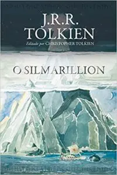
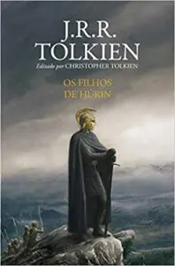
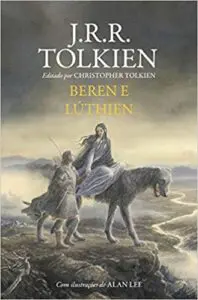
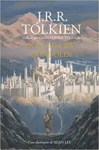
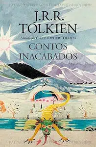
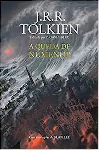
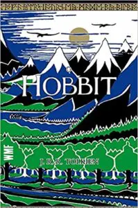
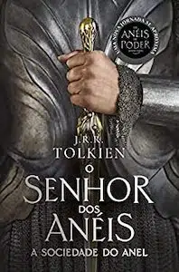
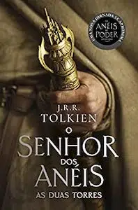
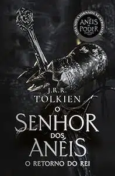

|  |  |  |
|
A leitura desse livro é importantíssima para a total compreensão da história da Terra-Média e uma fonte de imersão no universo criado pelo célebre autor.É a história da rebelião de Fëanor e de sua gente contra os deuses, de seu exílio de Valinor e retorno à Terra-Média e de sua guerra, que os personagens de O Senhor dos Anéis têm como referência. |
Considerada a grande tragédia escrita por J.R.R. Tolkien, Os Filhos de Húrin apresenta uma narrativa ininterrupta e completa. Ao lado de Beren e Lúthien e A Queda de Gondolin, a história é considerada um dos “Três Grandes Contos dos Dias Antigos” que estão dispostos de maneira condensada em O Silmarillion.A obra Os Filhos de Húrin é considerada a grande tragédia escrita por J.R.R. Tolkien, apresentando uma narrativa ininterrupta e completa. Ao lado de Beren e Lúthien e A Queda de Gondolin, a história é considerada um dos “Três Grandes Contos dos Dias Antigos” que estão dispostos de maneira condensada em O Silmarillion. |
Citada em O Senhor dos Anéis, e cuja história é contada de forma resumida em O Silmarillion, essa obra narra o romance e a jornada épica de Beren, um homem mortal, e Lúthien, uma princesa élfica.Essa história corresponderia à terceira obra na sequência de livros de O Senhor dos Anéis. |
|  |  |  |
|
A Queda de Gondolin narra a trajetória de Tuor, um homem de uma casa outrora nobre, que agora tenta fugir da escravidão para buscar uma mítica e secreta cidade, da qual conhece apenas rumores. Essa história corresponderia à quarta obra na sequência de livros de O Senhor dos Anéis. |
Assim como todos os livros lançados postumamente, Os Contos Inacabados foram reunidos e editados pelo filho e herdeiro literário do autor, Christopher Tolkien, que fornece um breve comentário sobre cada história, ajudando o leitor a preencher as lacunas e a colocar cada uma no contexto dos demais escritos de seu pai. Essa obra conecta várias eras da Terra-Média e corresponderia à quinta obra na sequência de livros de O Senhor dos Anéis. |
Os escritos de J.R.R. Tolkien sobre a Segunda Era da Terra-média reunidos pela primeira vez em um único volume e se posicionam, cronologicamente, como sexta obra da sequência de livros de O Senhor Dos Anéis – finalizada pelo tolkienista Brian Sibley. A base da obra é O Conto Dos Anos presente no Apêndice B de O Retorno do Rei. |
|  |  |  |
|
Imediatamente anterior à sequência de livros de O Senhor dos Anéis, 'O Hobbit' conquistou sucesso imediato quando foi publicado em 1937.Ele conta a história de Bilbo Bolseiro, um hobbit que leva uma vida confortável e sem ambições. Mas seu contentamento é perturbado quando Gandalf, o mago, e uma companhia de Anãos batem à sua porta e levam-no para uma expedição. |
O volume inicial da sequência de livros de O Senhor dos Anéis, lançado originalmente em julho de 1954, foi o primeiro grande épico de fantasia moderno, conquistando milhões de leitores e se tornando o padrão de referência para todas as outras obras do gênero até hoje. A imaginação prodigiosa de J.R.R. Tolkien e seu conhecimento profundo das antigas mitologias da Europa permitiram que ele criasse um universo tão complexo e convincente quanto o mundo real. |
O segundo volume da sequência de livros de O Senhor dos Anéis, mais importante épico de fantasia moderno, narra os caminhos separados seguidos pelos membros da Sociedade do Anel em sua luta para deter Sauron, o Senhor Sombrio da terra de Mordor, e destruir o Um Anel, no qual está contida a maior parte do poder do tirano demoníaco imaginado por J.R.R. Tolkien. |
|  | ||
|
A guerra entre os Povos Livres da Terra-média e Sauron, o Senhor Sombrio da terra de Mordor, chega a seu clímax no último volume da sequência de livros de O Senhor dos Anéis. As batalhas grandiosas que estão prestes a acontecer, no entanto, são apenas o pano de fundo para o verdadeiro drama: a missão quase suicida dos hobbits Frodo e Sam, que tentam destruir o Um Anel, fonte do poder de Sauron, infiltrando-se no coração do território do Inimigo. |